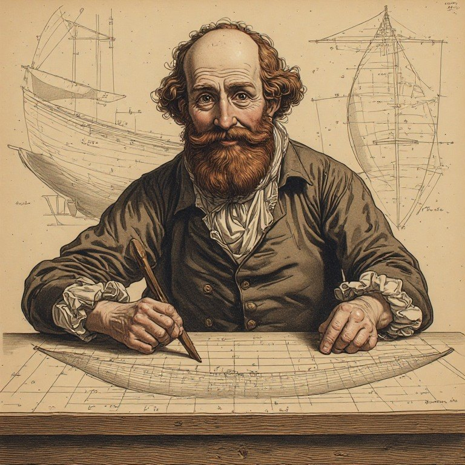

REFERENCE · LINES DRAWING
Drag to orbit · right-drag to pan · scroll to zoom · click a handle to edit
The hull is a subdivision surface. You move the control cage (orange handles), and Catmull–Clark subdivision makes the smooth hull that sits inside it, exactly like Blender’s Subdivision Surface modifier at level 2. Only the starboard half is modelled; the port side is its mirror.
Pick a preset, select a handle and drag the gizmo arrows. Switch to Section to move a whole control section, or Fore–aft row to move a run of points from stern to bow. Red handles lie on the centreplane (keel, stem, sternpost).
Use Zebra to check fairness: smooth, evenly flowing stripes mean a fair hull, and kinks or wobbles show bumps.
The Lines Drawing tab sets out the three plans at a true standard scale on an ISO sheet with a title block and a scale of metres. By default it follows Steffy’s conventions: bow to the left, plans titled Sheer, Body and Half-Breadth, and sections lettered A, B, C… towards the bow and numbered 1, 2, 3… towards the stern from the midship section (⦶). Switch the convention to compare with naval-architecture practice (bow right, stations 0–N).
The curves in the drawing are run through the computed intersection points like a draughtsman’s batten. Export the sheet as SVG or PNG, and the table of offsets as CSV.
Drag a handle directly, or click it for the arrow gizmo · ←→↑↓ nudge the selected handle in the current view (Shift = fine) · 1 2 3 selection mode · Esc deselect · F frame · Ctrl+Z / Y undo / redo · Tab switch 3D / drawing · H this guide
Trace a plan: load a scanned lines plan behind the Profile, Plan or End view, then Calibrate: click two points on the drawing (for example the ends of the baseline) and give the distance between them. Use Move image to drag it into place (scroll to scale, Shift+scroll to rotate). While tracing, the view is simplified to the outline and the lines that are curves in that view, with handles shown as pink diamonds. Then shape the hull to the drawing.
Trace lines → hull: with the plan calibrated behind each view, press Start tracing and click along the keel, stem, sternpost and sheer (Profile), the deck line (Plan) and the sections (End view) to lay down battens. Shiplines lofts a hull through them and draws its own lines in gold over the scan, so you can see where your tracing, or the original drawing, is out of fair.
Evidence & reconstruction: import recorded points (CSV of x, y, z in metres) or a photogrammetry mesh (OBJ), align them to the hull, and fit the hull to what survives. Points turn green when they lie within tolerance. Where the hull is near evidence it counts as recorded and is drawn solid; elsewhere it is reconstructed and drawn dashed, with your paradata notes on the sheet. Try Sample wreck to practise.
Press ▶ Play for a four-round challenge: identify lines, name sections, match a midship section and fair a damaged hull. You finish with a certificate on a traditional lines plan.

Show that you can read and make a lines plan. Four rounds, 100 points, and a certificate on a traditional lines plan at the end.
Grades: High Distinction 85+ · Distinction 75+ · Credit 65+ · Pass 50+